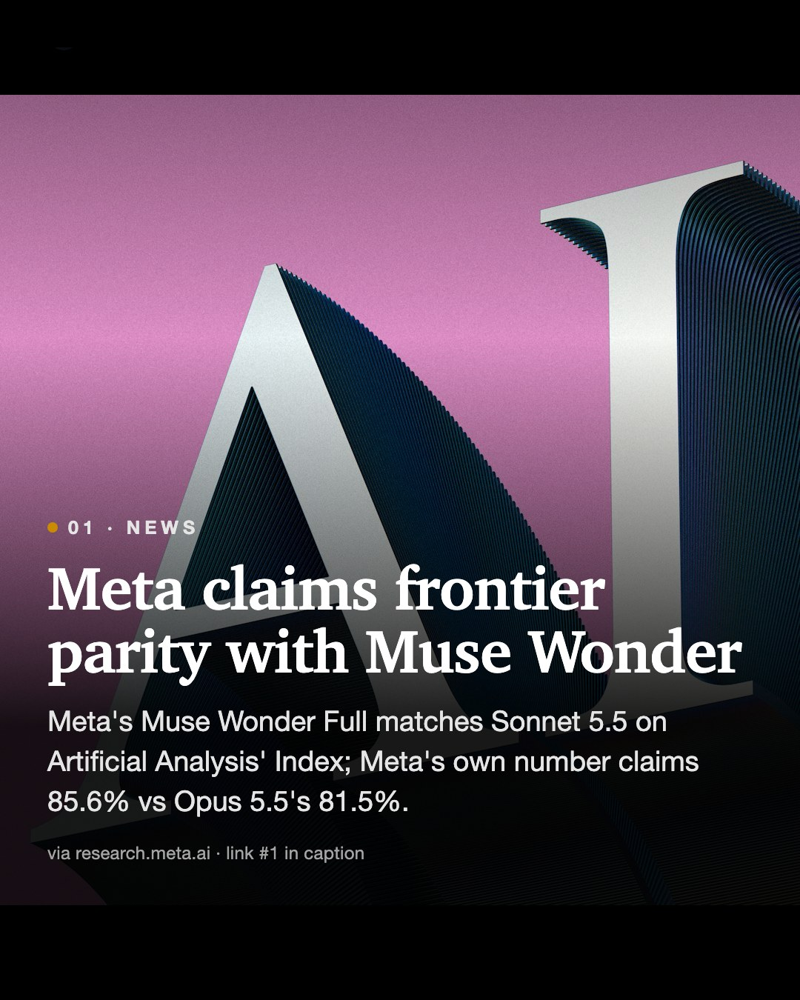
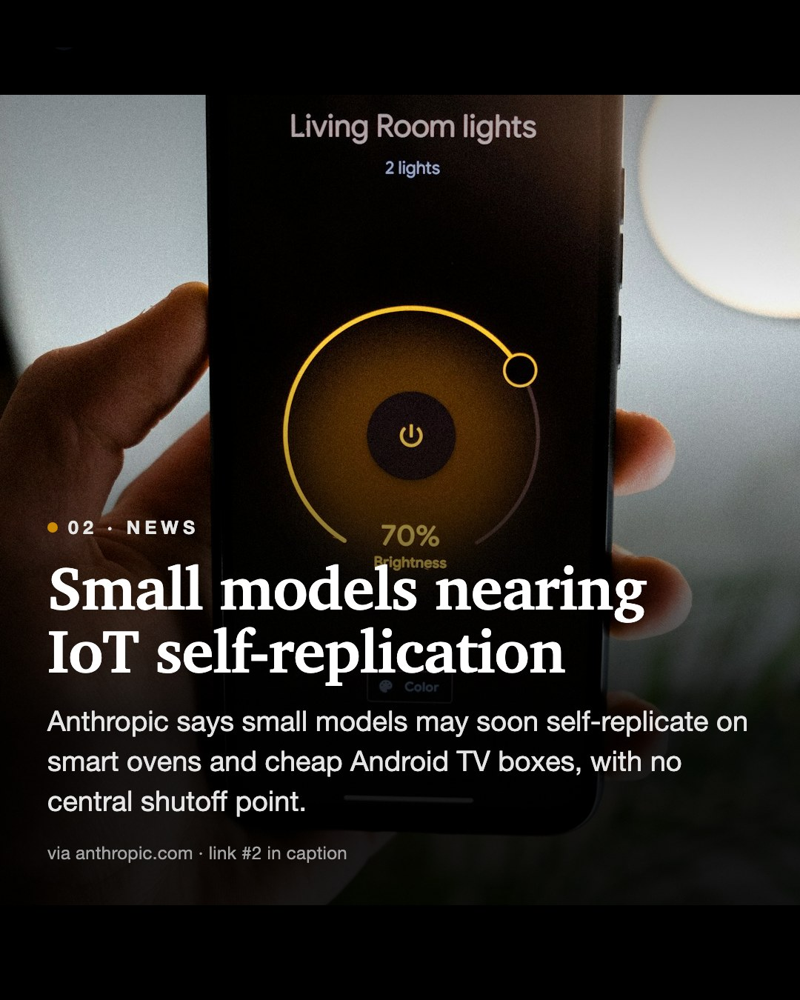
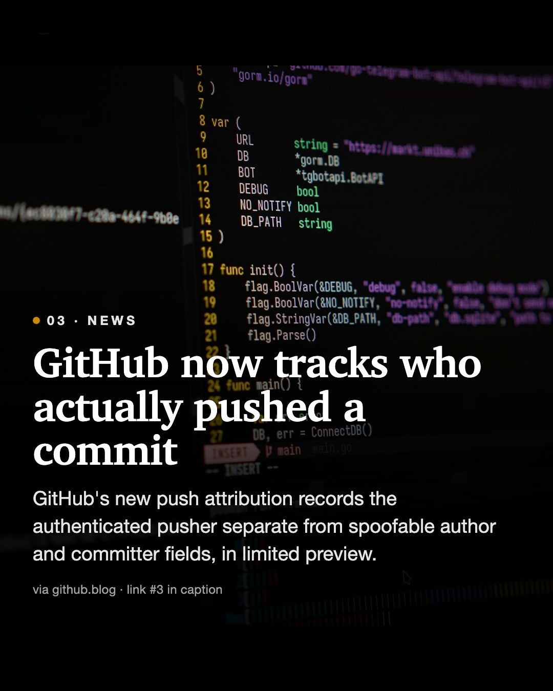
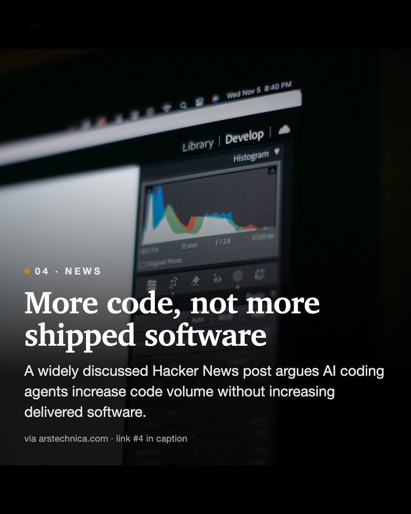
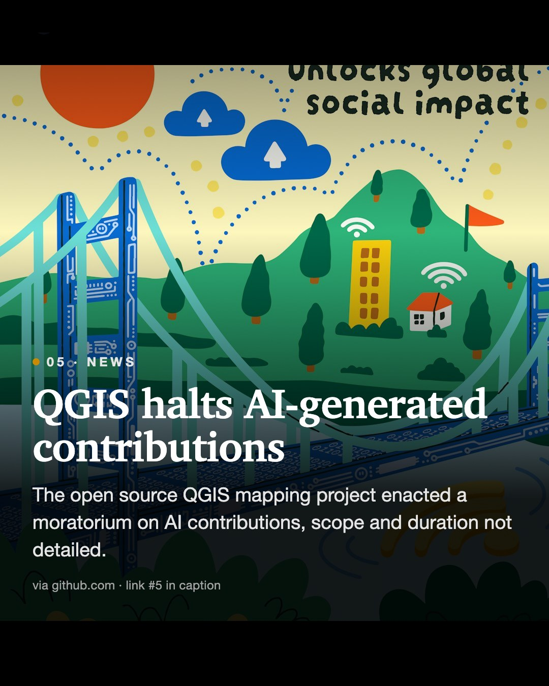
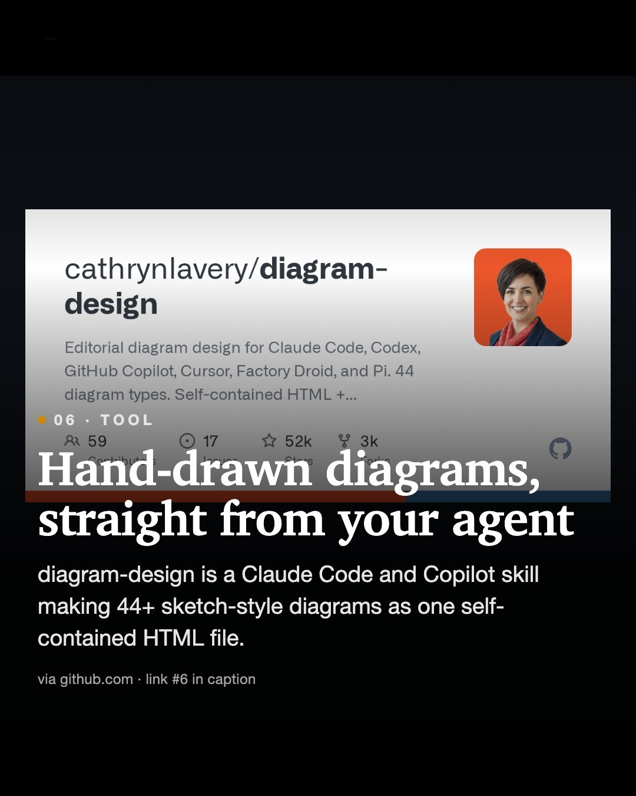
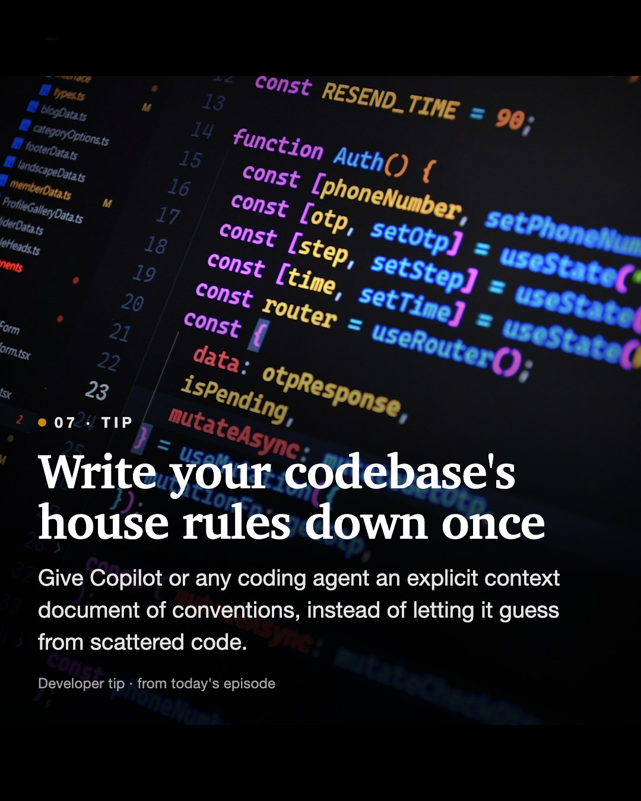

Daily Diff AI

Meta claims frontier parity with Muse Wonder
Meta's Muse Wonder Full matches Sonnet 5.5 on Artificial Analysis' Index; Meta's own number claims 85.6% vs Opus 5.5's 81.5%.
Read on research.meta.ai →
Small models nearing IoT self-replication
Anthropic says small models may soon self-replicate on smart ovens and cheap Android TV boxes, with no central shutoff point.
Read on anthropic.com →
GitHub now tracks who actually pushed a commit
GitHub's new push attribution records the authenticated pusher separate from spoofable author and committer fields, in limited preview.
Read on github.blog →
More code, not more shipped software
A widely discussed Hacker News post argues AI coding agents increase code volume without increasing delivered software.
Read on arstechnica.com →
QGIS halts AI-generated contributions
The open source QGIS mapping project enacted a moratorium on AI contributions, scope and duration not detailed.
Read on github.com →
Hand-drawn diagrams, straight from your agent
diagram-design is a Claude Code and Copilot skill making 44+ sketch-style diagrams as one self-contained HTML file.
Read on github.com →
Write your codebase's house rules down once
Give Copilot or any coding agent an explicit context document of conventions, instead of letting it guess from scattered code.